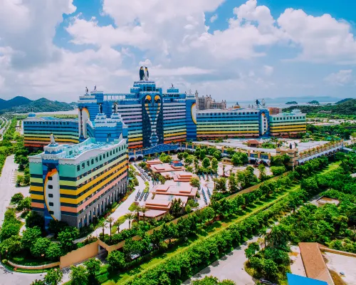
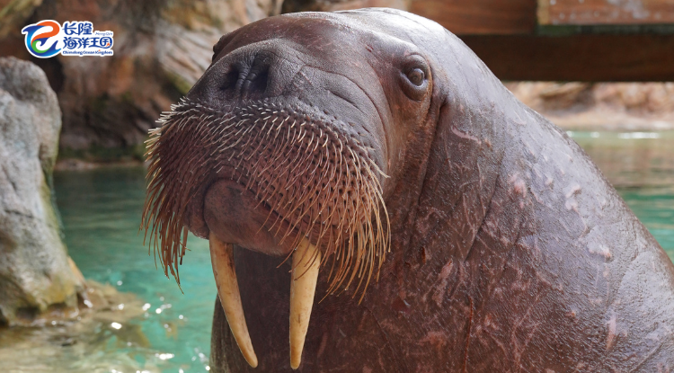
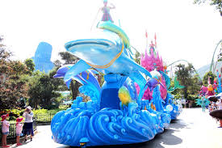
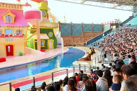
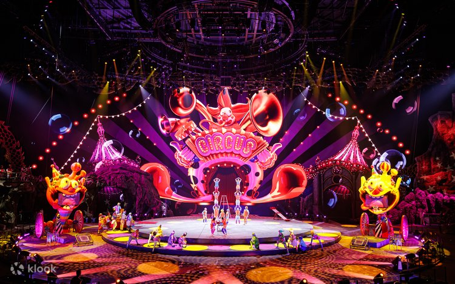
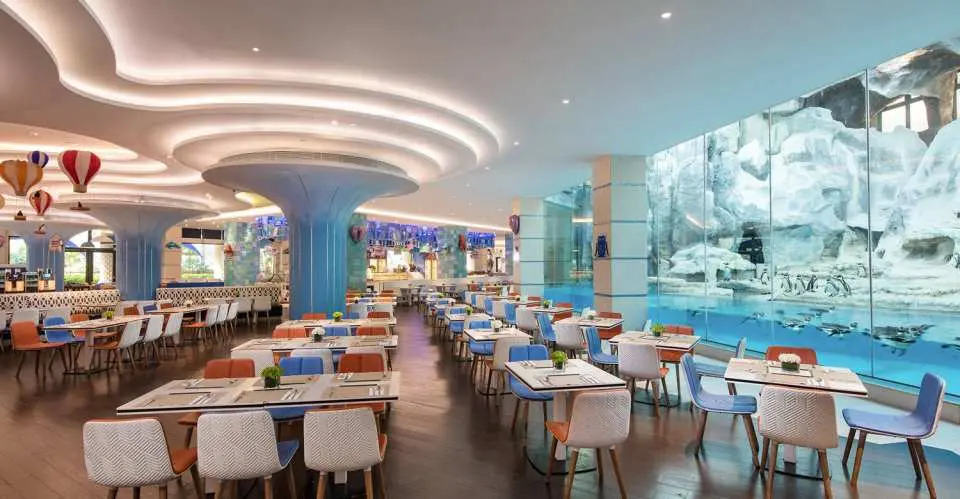
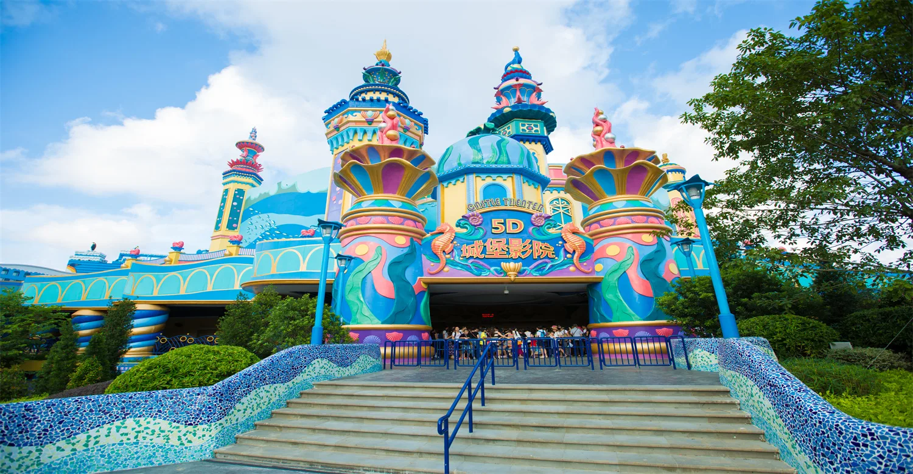

交通時間表
屯門碼頭 → 珠海長隆
🚌 龍運巴士 A33⏱ 15-20分鐘 | 💰 $15
🛃 旅檢大樓過關⏱ 10-20分鐘
🌉 港珠澳大橋金巴⏱ 40分鐘 | 💰 $65
🛃 珠海口岸入境⏱ 10-15分鐘
🚕 的士前往企鵝酒店⏱ 25-40分鐘 | 💰 ¥100-130
A33 晨早班次： 09:15 / 09:35 / 09:55
11:45 - 12:45
Check-in + 快速午餐
11:45 前抵達酒店，寄存行李後於「食街」快速用餐，12:45 出發前往 5D影院。
需提前15分鐘排隊入場！
需提前15分鐘排隊入場！

13:30 - 14:00

5D城堡影院 🎬
動感座椅+風雨特效，建議 13:15 前排隊。
表演時間參考：10:30 / 12:00 / 13:30 / 15:00 / 16:30 / 18:00 (以當日公告為準)
表演時間參考：10:30 / 12:00 / 13:30 / 15:00 / 16:30 / 18:00 (以當日公告為準)
14:00 - 14:45
周邊展館參觀
海牛館、鰩魚池、海洋大街拍照。

15:00 - 15:20
海洋大巡遊 🎭
繽紛花車互動，橫琴海主幹道。
表演時間參考：15:00 (以當日公告為準)
表演時間參考：15:00 (以當日公告為準)

15:30 - 16:00

海豚劇場 🐬
🌊 海豚劇場 (未必去到) — 坐下來看表演，長者可以休息，小朋友也能近距離看動物！
表演時間參考：13:00、17:00 (以當日公告為準)
16:15 - 16:40
海獅劇場 🦭
🎭 海獅劇場(未必去到) — 幽默搞笑的海獅表演，坐下來欣賞，長輩可以趁機休息。
表演時間參考：13:00、17:00 (以當日公告為準)

17:00 - 18:30
長隆秀 🎪 (Plan 2.0 優先安排)
國際級雜技表演，長輩與小朋友最愛。
📌 建議 16:40 前抵達馬戲城，提早入座選位。
表演時間參考：17:00 (以當日公告為準)
📌 建議 16:40 前抵達馬戲城，提早入座選位。
表演時間參考：17:00 (以當日公告為準)

18:35 - 18:45

散步回企鵝酒店 🚶
從馬戲城步行回企鵝酒店，約 5-10 分鐘。
18:45 起
帝企鵝自助晚餐 🍴
🍽️ 邊食邊睇企鵝！帝企鵝自助餐廳營業時間：晚餐 17:30 - 21:30
✨ 完美銜接：18:45 抵達餐廳，第一波人流已入座，您剛好能接上晚餐的高峰尾段，並有充裕時間吃到餐廳結束。
✨ 完美銜接：18:45 抵達餐廳，第一波人流已入座，您剛好能接上晚餐的高峰尾段，並有充裕時間吃到餐廳結束。



5D 城堡影院

深海潛艇
百慕大歷險 🌊 推薦！
海底互動船
| 🔥 虎鯨劇場 (飛船樂園) 非常震撼！ | 10:30 / 12:00 / 16:00 |
| 🐋 白鯨劇場 (海洋王國) 必去 | 14:00 (以當日公告為準) |
| 🐬 海豚劇場 (海洋王國) | 13:00 / 17:00 (以當日公告為準) |
| 🦭 海獅劇場 (海洋王國) | 13:00 / 17:00 (以當日公告為準) |
| 🎭 海洋大巡遊 | 15:00 (以當日公告為準) |
| 🐘 超級猛獁大巡遊 | 19:00 (以當日公告為準) |
| 🌌 海洋夜光大巡遊 | 19:30 (以當日公告為準) |
| 🎆 海洋幻彩煙花秀 | 20:00 (以當日公告為準) |
| 🎪 長隆秀 | 17:00 (Day 1，以當日公告為準) |
📌 貼士：所有表演建議提前15分鐘入場，長隆秀請提前20分鐘入座。
🐋 珠海長隆海洋王國｜餐廳推介
| 餐廳名稱 | 主要菜系 | 餐飲形式 | 人均消費 | 特色 |
|---|---|---|---|---|
| 海底餐廳 | 中西式套餐/單點 | 餐桌服務 | 約 ¥310+ | 最大賣點：鄰近鯨鯊館巨型展視屏，可邊食邊睇魚！氣氛獨特，打卡一流。需要提早預約。 |
| 橫琴灣畔餐廳 | 中式風味快餐 | 快餐服務 | 約 ¥73+ | 性價比較高，提供中式飯麵套餐。 |
| 雨林餐廳 | 東南亞風味快餐 | 快餐服務 | 約 ¥103+ | 鄰近鸚鵡過山車。 |
| 海洋大街餐廳 | 西式/主題快餐 | 快餐服務 | 約 ¥95+ | 位於入口大街，方便就腳。 |
| 城堡餐廳 | 日韓風味快餐 | 快餐服務 | 約 ¥72+ | 提供日韓式飯食選擇。 |
| 海象餐廳 | 粵式風味快餐 | 快餐服務 | 約 ¥73+ | 想食燒味飯？呢度有！排隊人流或較少。 |
| 英雄家族餐廳 | 西式快餐/親子餐 | 快餐服務 | 約 ¥86+ | 裝修得意，啱晒小朋友。 |
🚀 珠海長隆飛船樂園｜餐廳推介
| 餐廳名稱 | 主要菜系 | 餐飲形式 | 人均消費 | 特色 |
|---|---|---|---|---|
| 虎鯨餐廳 🐋 | 中西式自助/套餐 | 餐桌服務 | 約 ¥98-128 | ✨ 萬眾矚目！180度海洋景色，與虎鯨同框用餐，建議提前30分鐘佔據第一排位置。 |
| 星際探索餐廳 | 太空主題快餐 | 快餐服務 | 約 ¥88+ | 位於宇宙世界旁，科幻裝潢，提供漢堡、意粉等西式快餐。 |
| 銀河茶餐廳 | 港式茶餐廳 | 快餐服務 | 約 ¥68+ | 提供港式奶茶、菠蘿油、咖喱飯等地道港式美食。 |
| 珊瑚簡餐 | 輕食/簡餐 | 快餐服務 | 約 ¥55+ | 位於珊瑚秘境旁，提供三文治、沙律、咖啡等輕食，適合快速補充體力。 |
💡 飛船樂園全室內，所有餐廳均有冷氣，適合長輩小朋友用餐休息。
🏨 企鵝酒店｜美食街推介
| 餐廳名稱 | 主要菜系 | 餐飲形式 | 人均消費 | 特色 |
|---|---|---|---|---|
| 帝企鵝自助餐廳 🐧 | 國際自助餐 | 自助餐 | 約 ¥198-298 | 邊食邊睇企鵝！晚餐時段 17:30-21:30，必搶窗邊位，建議提早排隊。 |
| 食街 | 中式/亞洲風味 | 快餐/單點 | 約 ¥68-128 | 24小時營業（部分時段），提供粥粉麵飯、點心、小炒，適合隨時醫肚。 |
| 企鵝歡樂餐廳 | 親子主題餐 | 快餐服務 | 約 ¥78+ | 設有兒童遊樂區，適合帶小朋友家庭，提供卡通造型餐點。 |
| 海洋美食廣場 | 多國美食匯集 | 美食廣場 | 約 ¥50-100 | 多家小吃檔口，提供日式拉麵、韓式拌飯、台式滷肉飯等多元選擇。 |
📌 註：以上資訊僅供參考，餐廳菜單、價格及營業時間以現場實際公佈為準。


🚨 貼身緊急聯絡
🏨 企鵝酒店: 0756-2993366 (24h)
🚑 急救/報警: 120 / 110
💳 支付: AlipayHK + 備用現金 ¥600
🍽️ 帝企鵝自助晚餐： 17:30 - 21:30